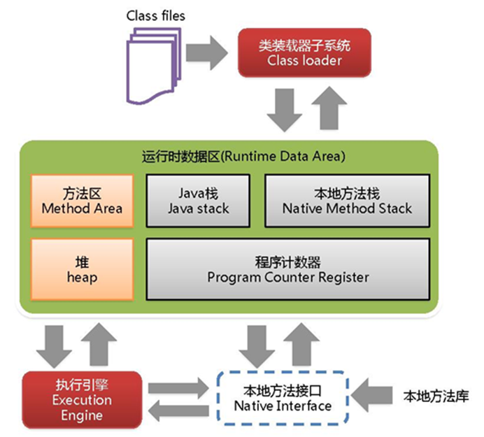
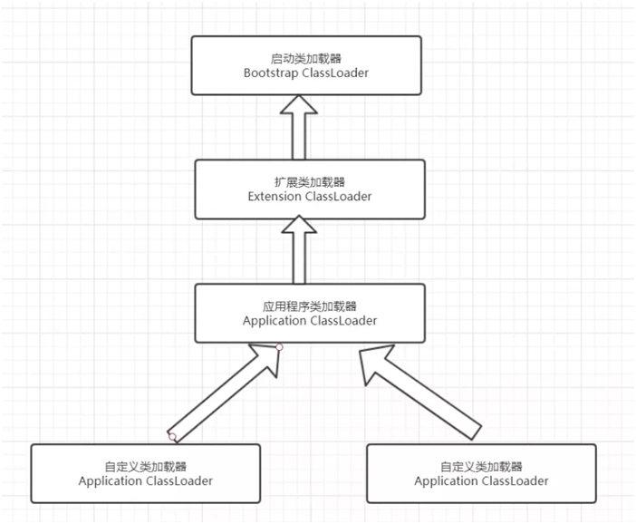

第4章JVM¶
4.1 JVM内存分哪几个区，每个区的作用是什么?¶

java虚拟机主要分为以下几个区:
（1）方法区：
a. 有时候也成为永久代，在该区内很少发生垃圾回收，但是并不代表不发生GC，在这里进行的GC主要是对方法区里的常量池和对类型的卸载
b. 方法区主要用来存储已被虚拟机加载的类的信息、常量、静态变量和即时编译器编译后的代码等数据。
c. 该区域是被线程共享的。
d. 方法区里有一个运行时常量池，用于存放静态编译产生的字面量和符号引用。该常量池具有动态性，也就是说常量并不一定是编译时确定，运行时生成的常量也会存在这个常量池中。
（2）虚拟机栈:
a. 虚拟机栈也就是我们平常所称的栈内存,它为java方法服务，每个方法在执行的时候都会创建一个栈帧，用于存储局部变量表、操作数栈、动态链接和方法出口等信息。
b. 虚拟机栈是线程私有的，它的生命周期与线程相同。
c. 局部变量表里存储的是基本数据类型、returnAddress类型（指向一条字节码指令的地址）和对象引用，这个对象引用有可能是指向对象起始地址的一个指针，也有可能是代表对象的句柄或者与对象相关联的位置。局部变量所需的内存空间在编译器间确定
d. 操作数栈的作用主要用来存储运算结果以及运算的操作数，它不同于局部变量表通过索引来访问，而是压栈和出栈的方式
e. 每个栈帧都包含一个指向运行时常量池中该栈帧所属方法的引用，持有这个引用是为了支持方法调用过程中的动态连接.动态链接就是将常量池中的符号引用在运行期转化为直接引用。
（3）本地方法栈： 本地方法栈和虚拟机栈类似，只不过本地方法栈为Native方法服务。
（4）堆：
java堆是所有线程所共享的一块内存，在虚拟机启动时创建，几乎所有的对象实例都在这里创建，因此该区域经常发生垃圾回收操作。
（5）程序计数器：
内存空间小，字节码解释器工作时通过改变这个计数值可以选取下一条需要执行的字节码指令，分支、循环、跳转、异常处理和线程恢复等功能都需要依赖这个计数器完成。该内存区域是唯一一个java虚拟机规范没有规定任何OOM情况的区域。
4.2 heap 和stack 有什么区别¶
（1）申请方式
stack:由系统自动分配。例如，声明在函数中一个局部变量 int b; 系统自动在栈中为 b 开辟空间
heap:需要程序员自己申请，并指明大小，在 c 中 malloc 函数，对于Java 需要手动 new Object()的形式开辟
（2）申请后系统的响应
stack：只要栈的剩余空间大于所申请空间，系统将为程序提供内存，否则将报异常提示栈溢出。
heap：首先应该知道操作系统有一个记录空闲内存地址的链表，当系统收到程序的申请时，会遍历该链表，寻找第一个空间大于所申请空间的堆结点，然后将该结点从空闲结点链表中删除，并将该结点的空间分配给程序。另外，由于找到的堆结点的大小不一定正好等于申请的大小，系统会自动的将多余的那部分重新放入空闲链表中。
（3）申请大小的限制
stack：栈是向低地址扩展的数据结构，是一块连续的内存的区域。这句话的意思是栈顶的地址和栈的最大容量是系统预先规定好的，在 WINDOWS 下，栈的大小是 2M（也有的说是 1M，总之是一个编译时就确定的常数），如果申请的空间超过栈的剩余空间时，将提示 overflow。因此，能从栈获得的空间较小。
heap：堆是向高地址扩展的数据结构，是不连续的内存区域。这是由于系统是用链表来存储的空闲内存地址的，自然是不连续的，而链表的遍历方向是由低地址向高地址。堆的大小受限于计算机系统中有效的虚拟内存。由此可见，堆获得的空间比较灵活，也比较大。
（4）申请效率的比较
stack：由系统自动分配，速度较快。但程序员是无法控制的。
heap：由 new 分配的内存，一般速度比较慢，而且容易产生内存碎片,不过用起来最方便。
（5）heap和stack中的存储内容
stack：在函数调用时，第一个进栈的是主函数中后的下一条指令（函数调用语句的下一条可执行语句）的地址，然后是函数的各个参数，在大多数的 C 编译器中，参数是由右往左入栈的，然后是函数中的局部变量。注意静态变量是不入栈的。
当本次函数调用结束后，局部变量先出栈，然后是参数，最后栈顶指针指向最开始存的地址，也就是主函数中的下一条指令，程序由该点继续运行。
heap：一般是在堆的头部用一个字节存放堆的大小。堆中的具体内容有程序员安排。
4.3java类加载过程?¶
Java类加载需要经历一下几个过程：
（1）加载
加载时类加载的第一个过程，在这个阶段，将完成一下三件事情：
a. 通过一个类的全限定名获取该类的二进制流。
b. 将该二进制流中的静态存储结构转化为方法去运行时数据结构。
c. 在内存中生成该类的Class对象，作为该类的数据访问入口。
（2）验证
验证的目的是为了确保Class文件的字节流中的信息不回危害到虚拟机.在该阶段主要完成以下四钟验证:
a. 文件格式验证：验证字节流是否符合Class文件的规范，如主次版本号是否在当前虚拟机范围内，常量池中的常量是否有不被支持的类型.
b. 元数据验证:对字节码描述的信息进行语义分析，如这个类是否有父类，是否集成了不被继承的类等。
c. 字节码验证：是整个验证过程中最复杂的一个阶段，通过验证数据流和控制流的分析，确定程序语义是否正确，主要针对方法体的验证。如：方法中的类型转换是否正确，跳转指令是否正确等。
d. 符号引用验证：这个动作在后面的解析过程中发生，主要是为了确保解析动作能正确执行。
e. 准备
准备阶段是为类的静态变量分配内存并将其初始化为默认值，这些内存都将在方法区中进行分配。准备阶段不分配类中的实例变量的内存，实例变量将会在对象实例化时随着对象一起分配在Java堆中。
（3）解析
该阶段主要完成符号引用到直接引用的转换动作。解析动作并不一定在初始化动作完成之前，也有可能在初始化之后。
（4）初始化
初始化时类加载的最后一步，前面的类加载过程，除了在加载阶段用户应用程序可以通过自定义类加载器参与之外，其余动作完全由虚拟机主导和控制。到了初始化阶段，才真正开始执行类中定义的Java程序代码。
4.4什么是类加载器，类加载器有哪些?¶
实现通过类的权限定名获取该类的二进制字节流的代码块叫做类加载器。
主要有一下四种类加载器:
（1）启动类加载器(Bootstrap ClassLoader)用来加载java核心类库，无法被java程序直接引用。
（2）扩展类加载器(extensions class loader):它用来加载 Java 的扩展库。Java 虚拟机的实现会提供一个扩展库目录。该类加载器在此目录里面查找并加载 Java 类。
（3）系统类加载器（system class loader）也叫应用类加载器：它根据 Java 应用的类路径（CLASSPATH）来加载 Java 类。一般来说，Java 应用的类都是由它来完成加载的。可以通过 ClassLoader.getSystemClassLoader()来获取它。
（4）用户自定义类加载器，通过继承 java.lang.ClassLoader类的方式实现。
4.5java中垃圾收集的方法有哪些?¶
1）引用计数法 应用于：微软的COM/ActionScrip3/Python等
a) 如果对象没有被引用，就会被回收，缺点：需要维护一个引用计算器
2）复制算法 年轻代中使用的是Minor GC，这种GC算法采用的是复制算法(Copying)
a) 效率高，缺点：需要内存容量大，比较耗内存
b) 使用在占空间比较小、刷新次数多的新生区
3）标记清除 老年代一般是由标记清除或者是标记清除与标记整理的混合实现
a) 效率比较低，会差生碎片。
4）标记压缩 老年代一般是由标记清除或者是标记清除与标记整理的混合实现
a) 效率低速度慢，需要移动对象，但不会产生碎片。
5）标记清除 压缩标记清除-标记压缩的集合，多次GC后才Compact
a) 使用于占空间大刷新次数少的养老区，是3 4的集合体
4.6如何判断一个对象是否存活?(或者GC对象的判定方法)¶
判断一个对象是否存活有两种方法:
（1）引用计数法
所谓引用计数法就是给每一个对象设置一个引用计数器，每当有一个地方引用这个对象时，就将计数器加一，引用失效时，计数器就减一。当一个对象的引用计数器为零时，说明此对象没有被引用，也就是“死对象”,将会被垃圾回收.
引用计数法有一个缺陷就是无法解决循环引用问题，也就是说当对象A引用对象B，对象B又引用者对象A，那么此时A,B对象的引用计数器都不为零，也就造成无法完成垃圾回收，所以主流的虚拟机都没有采用这种算法。
（2）可达性算法(引用链法)
该算法的基本思路就是通过一些被称为引用链（GC Roots）的对象作为起点，从这些节点开始向下搜索，搜索走过的路径被称为（Reference Chain)，当一个对象到GC Roots没有任何引用链相连时（即从GC Roots节点到该节点不可达），则证明该对象是不可用的。
在java中可以作为GC Roots的对象有以下几种：虚拟机栈中引用的对象、方法区类静态属性引用的对象、方法区常量池引用的对象、本地方法栈JNI引用的对象。
4.7简述java内存分配与回收策略以及Minor GC和Major GC（full GC）¶
内存分配：
（1）栈区：栈分为java虚拟机栈和本地方法栈
（2）堆区：堆被所有线程共享区域，在虚拟机启动时创建，唯一目的存放对象实例。堆区是gc的主要区域，通常情况下分为两个区块年轻代和年老代。更细一点年轻代又分为Eden区，主要放新创建对象，From survivor 和 To survivor 保存gc后幸存下的对象，默认情况下各自占比 8:1:1。
（3）方法区：被所有线程共享区域，用于存放已被虚拟机加载的类信息，常量，静态变量等数据。被Java虚拟机描述为堆的一个逻辑部分。习惯是也叫它永久代（permanment generation）
（4）程序计数器：当前线程所执行的行号指示器。通过改变计数器的值来确定下一条指令，比如循环，分支，跳转，异常处理，线程恢复等都是依赖计数器来完成。线程私有的。
回收策略以及Minor GC和Major GC：
（1）对象优先在堆的Eden区分配。
（2）大对象直接进入老年代。
（3）长期存活的对象将直接进入老年代。
当Eden区没有足够的空间进行分配时，虚拟机会执行一次Minor GC.Minor GC通常发生在新生代的Eden区，在这个区的对象生存期短，往往发生GC的频率较高，回收速度比较快;Full Gc/Major GC 发生在老年代，一般情况下，触发老年代GC的时候不会触发Minor GC,但是通过配置，可以在Full GC之前进行一次Minor GC这样可以加快老年代的回收速度。
4.8什么情况下会发生栈内存溢出。¶
栈是线程私有的，他的生命周期与线程相同，每个方法在执行的时候都会创建一个栈帧，用来存储局部变量表，操作数栈，动态链接，方法出口等信息。局部变量表又包含基本数据类型，对象引用类型
如果线程请求的栈深度大于虚拟机所允许的最大深度，将抛出StackOverflowError异常，方法递归调用产生这种结果。
如果Java虚拟机栈可以动态扩展，并且扩展的动作已经尝试过，但是无法申请到足够的内存去完成扩展，或者在新建立线程的时候没有足够的内存去创建对应的虚拟机栈，那么Java虚拟机将抛出一个OutOfMemory 异常。(线程启动过多)
参数 -Xss 去调整JVM栈的大小
4.9 JVM中一次完整的GC流程是怎样的，对象如何晋升到老年代¶
对象诞生即新生代->eden，在进行minor gc过程中，如果依旧存活，移动到from，变成Survivor，进行标记。当一个对象存活默认超过15次都没有被回收掉，就会进入老年代。
4.10你知道哪几种垃圾收集器，各自的优缺点，重点讲下cms和G1，包括原理，流程，优缺点。¶
垃圾收集器包括Serial、parNew、ParallelScavenge、SerialOld、ParallelOld、CMS、G1
CMS:
一、初始标记：此时标记需要用户线程停下来；
二、并发标记：此时标记可以和用户线程一起运行；
三、重新标记：此时标记需要用户线程停下来，主要母的是为了对并发标记的垃圾进行审核；
四、并发清除：与用户线程一起与运行进行垃圾清除；
缺点：
1、CMS收集器对cpu资源非常敏感；
2、CMS收集器无法清除浮动垃圾；
3、cms基于标记清除的算法实现的，所以内存碎片会产生过多。
G1收集器：
1、初始标记：标记GC Root能直接关联的对象，并且修改TAMS的值，让下一阶段的用户进行并发运行是，能够正确运用Region创建新对象，这阶段需要停顿，但停顿时间很短
2、并发标记：从GC Root开始对堆进行可达性分析，找出存活的对象，这段耗时较长，但可以与用户线程并发执行。
3、最终标记是为了修正在并发标记阶段因用户程序继续运作导致标记产生变动的那一部分的标记记录，虚拟机将这部分标记记录在线程Remembered Set中，这阶段需要停顿线程，但是可并行执行。
4、筛选回收：首先对各个Region的回收价值和成本进行排序，根据用户所期待的GC停顿时间来制定回收计划，这个阶段也可以与用户线程并行执行，但由于只回收一部分的Region,时间是用户可控制的，而且停顿用户线程将大幅度提高收集效率。
4.11 JVM内存模型的相关知识了解多少，比如重排序，内存屏障，happen-before，主内存，工作内存。¶
重排序：jvm虚拟机允许在不影响代码最终结果的情况下，可以乱序执行。
内存屏障：可以阻挡编译器的优化，也可以阻挡处理器的优化
happens-before原则：
1：一个线程的A操作总是在B之前，那多线程的A操作肯定实在B之前。
2：monitor 再加锁的情况下，持有锁的肯定先执行。
3：volatile修饰的情况下，写先于读发生
4：线程启动在一起之前 strat
5：线程死亡在一切之后 end
6：线程操作在一切线程中断之前
7：一个对象构造函数的结束都该对象的finalizer的开始之前
8：传递性，如果A肯定在B之前，B肯定在C之前，那A肯定是在C之前。
主内存：所有线程共享的内存空间
工作内存：每个线程特有的内存空间
4.12简单说说你了解的类加载器，可以打破双亲委派么，怎么打破。¶
1) 什么是类加载器？
类加载器就是根据指定全限定名称将class文件加载到JVM内存，转为Class对象。
启动类加载器（Bootstrap ClassLoader）：由C++语言实现（针对HotSpot）,负责将存放在
其他类加载器：由Java语言实现，继承自抽象类ClassLoader。如：
扩展类加载器（Extension ClassLoader）：负责加载
应用程序类加载器（Application ClassLoader）。负责加载用户类路径（classpath）上的指定类库，我们可以直接使用这个类加载器。一般情况，如果我们没有自定义类加载器默认就是用这个加载器。
2）双亲委派模型
双亲委派模型工作过程是：
如果一个类加载器收到类加载的请求，它首先不会自己去尝试加载这个类，而是把这个请求委派给父类加载器完成。每个类加载器都是如此，只有当父加载器在自己的搜索范围内找不到指定的类时（即ClassNotFoundException），子加载器才会尝试自己去加载。
双亲委派模型图：

3）为什么需要双亲委派模型？
在这里，先想一下，如果没有双亲委派，那么用户是不是可以自己定义一个java.lang.Object的同名类，java.lang.String的同名类，并把它放到ClassPath中,那么类之间的比较结果及类的唯一性将无法保证，因此，为什么需要双亲委派模型？防止内存中出现多份同样的字节码
4）怎么打破双亲委派模型？
打破双亲委派机制则不仅要继承ClassLoader类，还要重写loadClass和findClass方法。
4.13说说你知道的几种主要的JVM参数¶
1）堆栈配置相关
java -Xmx3550m -Xms3550m -Xmn2g -Xss128k
-XX:MaxPermSize=16m -XX:NewRatio=4 -XX:SurvivorRatio=4 -XX:MaxTenuringThreshold=0
-Xmx3550m：最大堆大小为3550m。
-Xms3550m：设置初始堆大小为3550m。
-Xmn2g：设置年轻代大小为2g。
-Xss128k：每个线程的堆栈大小为128k。
-XX:MaxPermSize：设置持久代大小为16m
-XX:NewRatio=4: 设置年轻代（包括Eden和两个Survivor区）与年老代的比值（除去持久代）。
-XX:SurvivorRatio=4：设置年轻代中Eden区与Survivor区的大小比值。设置为4，则两个Survivor区与一个Eden区的比值为2:4，一个Survivor区占整个年轻代的⅙
-XX:MaxTenuringThreshold=0：设置垃圾最大年龄。如果设置为0的话，则年轻代对象不经过Survivor区，直接进入年老代。
2）垃圾收集器相关
-XX:+UseParallelGC
-XX:ParallelGCThreads=20
-XX:+UseConcMarkSweepGC
-XX:CMSFullGCsBeforeCompaction=5
-XX:+UseCMSCompactAtFullCollection：
-XX:+UseParallelGC：选择垃圾收集器为并行收集器。
-XX:ParallelGCThreads=20：配置并行收集器的线程数
-XX:+UseConcMarkSweepGC：设置年老代为并发收集。
-XX:CMSFullGCsBeforeCompaction：由于并发收集器不对内存空间进行压缩、整理，所以运行一段时间以后会产生“碎片”，使得运行效率降低。此值设置运行多少次GC以后对内存空间进行压缩、整理。
-XX:+UseCMSCompactAtFullCollection：打开对年老代的压缩。可能会影响性能，但是可以消除碎片
3）辅助信息相关
-XX:+PrintGC
-XX:+PrintGCDetails
-XX:+PrintGC 输出形式:
[GC 118250K->113543K(130112K), 0.0094143 secs] [Full GC 121376K->10414K(130112K), 0.0650971 secs]
-XX:+PrintGCDetails 输出形式:
[GC [DefNew: 8614K->781K(9088K), 0.0123035 secs] 118250K->113543K(130112K), 0.0124633 secs] [GC [DefNew: 8614K->8614K(9088K), 0.0000665 secs][Tenured: 112761K->10414K(121024K), 0.0433488 secs] 121376K->10414K(130112K), 0.0436268 secs
4.14描述一下JVM加载class文件的原理机制？¶
装载:查找和导入class文件;
连接:
①检查:检查载入的class文件数据的正确性;
②准备:为类的静态变量分配存储空间;
③解析:将符号引用转换成直接引用(这一步是可选的)
初始化:初始化静态变量，静态代码块。
这样的过程在程序调用类的静态成员的时候开始执行，所以静态方法main()才会成为一般程序的入口方法。类的构造器也会引发该动作。
4.15垃圾收集算法¶
jvm的垃圾回收算法有3种，列举如下：
1，标记清除算法。（即把标注的可回收对象直接清理，这样会带来内存碎片化的问题，而且效率不高）；
2，标记整理算法。（即把标注的可回收对象清理，在清理的过程中整理内存，解决了内存的碎片化问题）；
3，标记复制算法。（把标注的对象清理，没有清理的对象复制到to区，然后互换引用，解决了内存碎片化的问题，但是需要维护对象关系带来一定代价）
4.16调优工具用过哪些¶
常用调优工具分为两类,jdk自带监控工具：jconsole和jvisualvm，第三方有：MAT(Memory Analyzer Tool)、GChisto。
jconsole，Java Monitoring and Management Console是从java5开始，在JDK中自带的java监控和管理控制台，用于对JVM中内存，线程和类等的监控jvisualvm，jdk自带全能工具，可以分析内存快照、线程快照；监控内存变化、GC变化等。MAT，Memory Analyzer Tool，一个基于Eclipse的内存分析工具，是一个快速、功能丰富的Java heap分析工具，它可以帮助我们查找内存泄漏和减少内存消耗
GChisto，一款专业分析gc日志的工具
4.17你知道哪些JVM性能调优¶
首先需要注意的是在对JVM内存调优的时候不能只看操作系统级别Java进程所占用的内存，这个数值不能准确的反应堆内存的真实占用情况，因为GC过后这个值是不会变化的，因此内存调优的时候要更多地使用JDK提供的内存查看工具，比如JConsole和Java VisualVM。
对JVM内存的系统级的调优主要的目的是减少GC的频率和Full GC的次数，过多的GC和Full GC是会占用很多的系统资源（主要是CPU），影响系统的吞吐量。特别要关注Full GC，因为它会对整个堆进行整理，导致Full GC一般由于以下几种情况：
旧生代空间不足
调优时尽量让对象在新生代GC时被回收、让对象在新生代多存活一段时间和不要创建过大的对象及数组避免直接在旧生代创建对象
Pemanet Generation空间不足
增大Perm Gen空间，避免太多静态对象
统计得到的GC后晋升到旧生代的平均大小大于旧生代剩余空间
控制好新生代和旧生代的比例
System.gc()被显示调用
垃圾回收不要手动触发，尽量依靠JVM自身的机制
调优手段主要是通过控制堆内存的各个部分的比例和GC策略来实现，下面来看看各部分比例不良设置会导致什么后果
1). 新生代设置过小
一是新生代GC次数非常频繁，增大系统消耗；二是导致大对象直接进入旧生代，占据了旧生代剩余空间，诱发Full GC
2). 新生代设置过大
一是新生代设置过大会导致旧生代过小（堆总量一定），从而诱发Full GC；二是新生代GC耗时大幅度增加
一般说来新生代占整个堆⅓比较合适
3). Survivor设置过小
导致对象从eden直接到达旧生代，降低了在新生代的存活时间
4). Survivor设置过大
导致eden过小，增加了GC频率
另外，通过-XX:MaxTenuringThreshold=n来控制新生代存活时间，尽量让对象在新生代被回收
由内存管理和垃圾回收可知新生代和旧生代都有多种GC策略和组合搭配，选择这些策略对于我们这些开发人员是个难题，JVM提供两种较为简单的GC策略的设置方式
1). 吞吐量优先
JVM以吞吐量为指标，自行选择相应的GC策略及控制新生代与旧生代的大小比例，来达到吞吐量指标。这个值可由-XX:GCTimeRatio=n来设置
2). 暂停时间优先
JVM以暂停时间为指标，自行选择相应的GC策略及控制新生代与旧生代的大小比例，尽量保证每次GC造成的应用停止时间都在指定的数值范围内完成。这个值可由-XX:MaxGCPauseRatio=n来设置
4.18 Eden和Survivor的比例分配等¶
默认比例8:1。部分对象都是朝生夕死。复制算法的基本思想就是将内存分为两块，每次只用其中一块，当这一块内存用完，就将还活着的对象复制到另外一块上面。复制算法不会产生内存碎片。
4.19说一说你对环境变量classpath的理解？如果一个类不在classpath下，为什么会抛出ClassNotFoundException异常，如果在不改变这个类路径的前期下，怎样才能正确加载这个类？¶
classpath是javac编译器的一个环境变量。它的作用与import、package关键字有关。package的所在位置，就是设置CLASSPATH当编译器面对import packag这个语句时，它先会查找CLASSPATH所指定的目录，并检视子目录java/util是否存在，然后找出名称吻合的已编译文件（.class文件）。如果没有找到就会报错！
动态加载包
本文总阅读量次